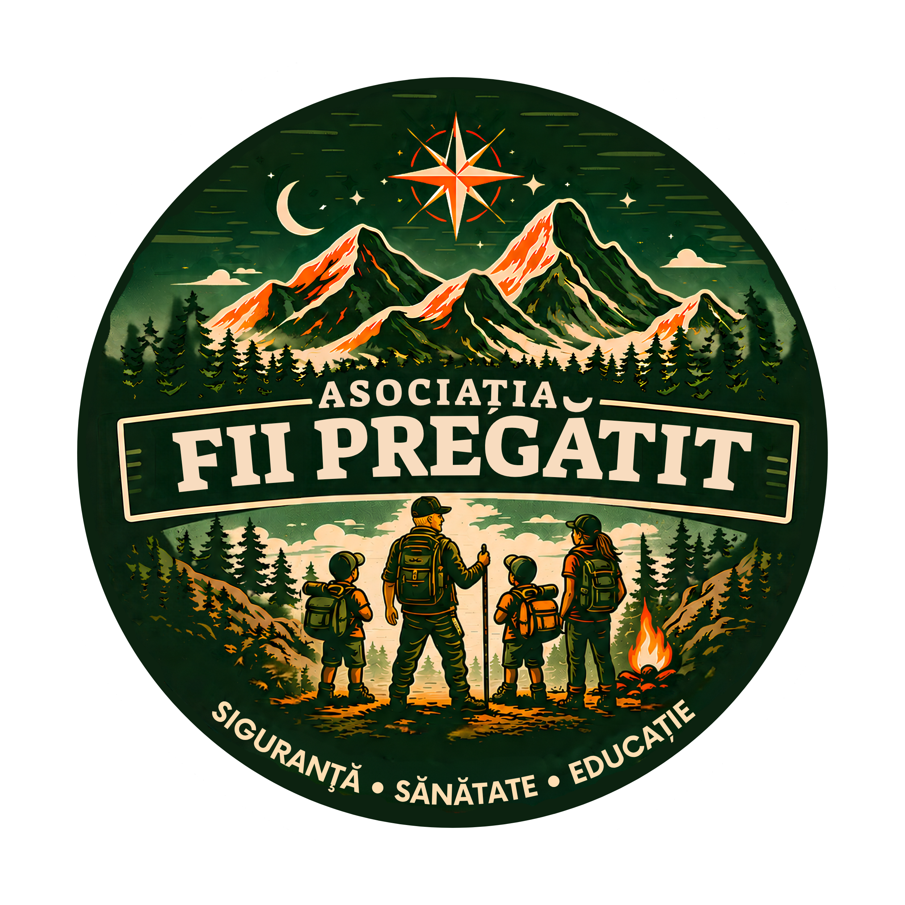

Activități pentru copii de 7–12 ani, în munții din jurul Brașovului. Curaj, calm și decizii bune — învățate pe traseu, prin experiență, nu doar din manual.
Învățare prin experiență — autonomie, decizii bune și cunoaștere practică.
Mișcare, aer curat și o conexiune reală cu natura, departe de ecran.
Instructori pregătiți, trasee verificate și grijă constantă față de fiecare copil.
Fii Pregătit a pornit dintr-o idee simplă: copiii au nevoie de mai mult decât activități frumoase. Au nevoie de contexte reale în care să prindă curaj, să capete încredere și să învețe să fie autonomi.
Suntem părinți a doi băieți, o familie din Brașov și lucrăm direct cu copiii în natură, cu grijă, structură și multă atenție la siguranță. Activitățile sunt ghidate de noi, Corina și Laurențiu, iar experiența lui Lau în intervenții speciale și negociere în situații de criză ne ajută să construim ieșiri clare, sigure și adaptate copiilor.

Copiii descoperă cum reacționează creierul când apar frica sau panica și exersează un model simplu de decizie — pe care îl duc apoi acasă: la temă, la ceartă, la ecran.
Sub cei trei piloni, fiecare activitate atinge cinci dimensiuni ale copilului. Nu le predăm ca pe o lecție — le trăiesc, pas cu pas, prin poveste și provocare reală.
„Inteligența emoțională înseamnă echilibru, responsabilitate și respect — față de tine, față de echipă, față de munte."
Pentru un părinte nou, asta contează cel mai mult. La noi nu e o promisiune — e construită în fiecare detaliu al ieșirii.
Pentru siguranța copiilor și buna desfășurare a activităților, părinții și participanții completează documentele necesare înainte de participare și confirmă că au luat la cunoștință regulamentul.
În spatele fiecărei ieșiri în natură sunt ore de pregătire, echipament verificat și oameni care veghează la siguranța copiilor. Sprijinul tău ne ajută să facem toate acestea posibile — și să ducem mai departe o asociație care formează copii încrezători, calmi și pregătiți pentru viață.
Redirecționezi un procent din impozitul tău pe venit către asociație.
Nu te costă nimic — banii oricum merg la stat.
Firmele pot redirecționa o parte din impozit către asociație, printr-un contract de sponsorizare.
Hai să discutăm →Cel mai rapid răspuns vine pe WhatsApp. Spune-ne numele și vârsta copilului, iar noi îți zicem când e următoarea ieșire.